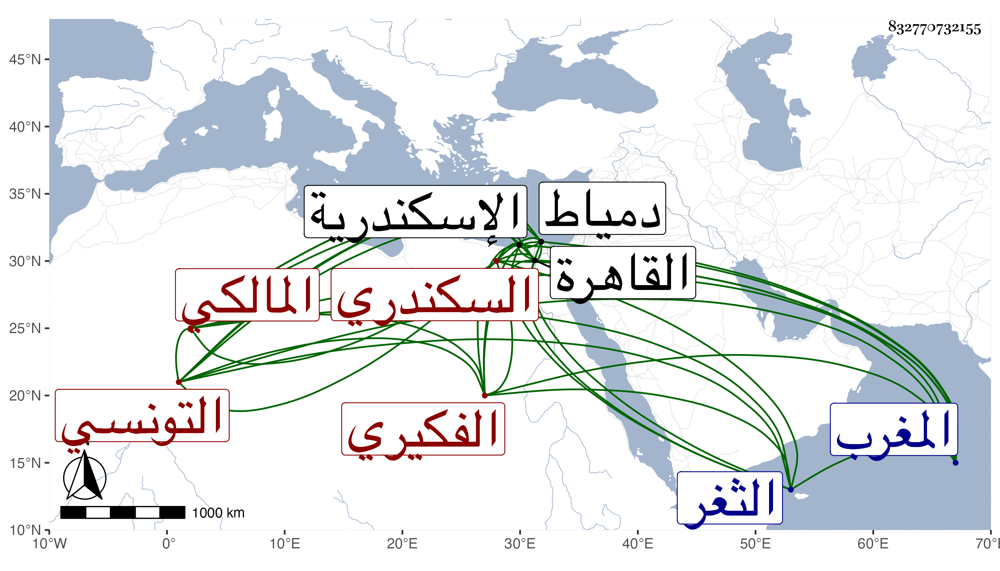

0902Sakhawi.DawLamic.ITO20230111-ara1.EIS1600.832770732155
Biography ID: 832770732155
36
محمد بن عبد الرحمن بن منصور بن محمد بن مسعود بن محمد الكمال بن الزين الفكيري بفتح الفاء ثم كاف مكسورة نسبة لقبيلة بالمغرب التونسي ثم السكندري المالكي أخو أحمد الماضي ويعرف بالعسلوني بمهملتين . ولد باسكندرية سنة تسعين وسبعمائة وقرأ بها القرآن على أبيه وحفظ بعض الرسالة في الفقه والملحة واشتغل يسيرا ، وأجاز له باستدعاء ابن يفتح الله الزين المراغي ، وتحول إلى القاهرة في سنة ثلاث وثلاثين فأقام بها مدة ثم سافر منها قريبا من سنة أربع وأربعين وقطن دمياط مديما التكسب بالتجارة إلى أن عدي على حانوته فصار حينئذ ينسج على السرير ، وربما شهد في بعض مراكز الثغر ، ولقيته هناك فقرأت عليه ، وكان خيرا سليم الفطرة محبا في العلم وأهله . مات بعد سنة سبعين .
